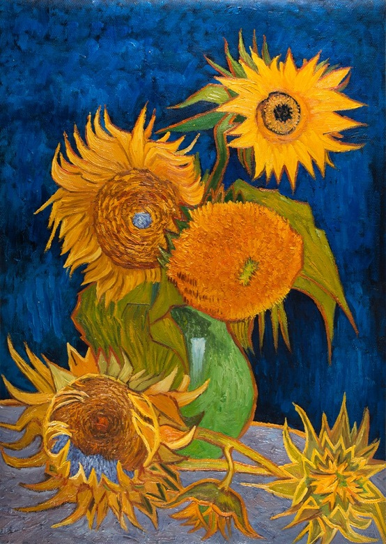

Arles Sunflowers
ถูกวาดในปีค.ศ. 1888-1889 ที่เมืองอาร์ล ประเทศฝรั่งเศส ซึ่งเป็นภาพของดอกทานตะวันที่มีทั้งตูม บาน และเหี่ยวเฉา ถูกจัดใส่ในแจกัน โดยภาพชุดนี้มีทั้งหมด 7 ภาพ โดยในจำนวน 4 ภาพนั้นเป็นภาพต้นฉบับที่วาดในปีค.ศ. 1888 ส่วนอีก 3 ภาพที่เหลือเป็นภาพวาดในปีค.ศ. 1889 ถูกตั้งชื่อว่า "The Repetitions" เลียนแบบผลงานชุดแรก เพื่อพัฒนาสกิล และปรับคอมโพซิชันของรูปให้ดีขึ้น และต่อมาภาพที่ 1 และ 2 ไม่ถูกค้นพบ หลงเหลือไว้เพียง 5 ภาพตามมิวเซียมต่างๆ ที่เป็นที่รู้จักกันดีจนทุกวันนี้